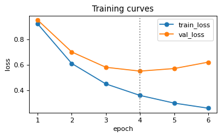

D.5 matplotlib: plots that explain data and models
A plot is how you find problems in data and how you convince people a model works. Figures and axes and the object-oriented API, choosing a chart for the question, plotting from pandas, the standard ML plots (training curves, confusion matrices, threshold trade-offs, embeddings), and the habits that keep a chart honest. Every figure your code draws on this page appears under the output, and the tests inspect the axes.
13 problems3 easy · 7 medium · 3 hard
1Figures, Axes and the object-oriented API
matplotlib draws a Figure (the canvas) containing one or more Axes (individual plots; the name is unlucky, since each Axes has an x axis and a y axis). Everything you see is an object you can inspect: an Axes has lines (from plot), patches (bars and histogram bins), collections (scatter points), images (from imshow), texts, a title, labels and a legend. That is also how this page grades your plots: the tests read those objects, while the picture appears under the output so you can see what you drew.
There are two ways to call it. The pyplot style, plt.plot(...), plt.title(...), acts on a hidden "current" figure and axes, which is convenient in a notebook and confusing as soon as there are two plots. The object-oriented style creates them explicitly with fig, ax = plt.subplots() and calls methods on ax. Use the object-oriented style in any code you keep, and write plotting helpers that take an ax argument and return it, so callers can place them in any grid; pandas and seaborn plotting functions follow the same convention.
A figure is a tree of objects; ax is the one you draw on, and every line, label and title hangs off it.
anatomy.py
import matplotlib.pyplot as plt
days = [1, 2, 3, 4, 5, 6, 7]
counts = [12, 15, 11, 30, 14, 13, 16]
fig, ax = plt.subplots(figsize=(5, 2.6))
ax.plot(days, counts, marker="o", label="complaints")
ax.axhline(sum(counts) / len(counts), color="gray", linestyle="--", label="mean")
ax.set(title="Daily complaints", xlabel="day of January", ylabel="complaints")
ax.legend()
print(type(fig).__name__, type(ax).__name__, len(fig.axes))
print(len(ax.lines), ax.lines[0].get_ydata().tolist()[:3], ax.get_title())
print([t.get_text() for t in ax.get_legend().get_texts()])
Pick the chart from the question, not from the menu. How does it change over time? A line chart, time on the x axis. How do categories compare? A bar chart, sorted by value, horizontal when the labels are long. What does the distribution look like? A histogram (or a box plot to compare several distributions), which shows skew, outliers and multiple peaks that a mean hides. How do two numbers relate? A scatter plot, with transparency (alpha) when points overlap. How do counts split across two categories? A heatmap of a cross-tabulation. Pie charts and 3D effects make comparisons harder and are rarely the right choice.
Each common question has a chart that answers it directly.
The left histogram is what skewed money data usually looks like: nearly everything is piled against zero, and a few large refunds stretch the axis. The median (about 53 dollars here) is well below the mean (about 87), which a single summary number would hide. A log scale on the x axis, with bins spaced evenly in log space, spreads the data out and shows its real shape. The bars are sorted by value, so the ranking is readable at a glance.
3Plotting straight from pandas
pandas wraps matplotlib: df.plot(kind="line"), series.plot.bar(), df.plot.scatter(x=..., y=...), series.plot.hist(bins=...). It uses the index as the x axis and one line per column, adds a legend, and returns the Axes, so you finish the chart with the usual ax.set(...) calls; pass ax= to draw into a grid you created. The typical flow is to shape the data with pandas (a groupby, a resample, a pivot_table from D.3 and D.4) and let the plot be one call.
pandas_plot.py
import pandas as pd
import matplotlib.pyplot as plt
runs = pd.DataFrame({"epoch": [1, 2, 3, 4, 5, 6],
"train_loss": [0.92, 0.61, 0.45, 0.36, 0.30, 0.26],
"val_loss": [0.95, 0.70, 0.58, 0.55, 0.57, 0.62]}).set_index("epoch")
ax = runs.plot(figsize=(5, 2.6), marker="o")
best = runs["val_loss"].idxmin()
ax.axvline(best, color="gray", linestyle=":")
ax.set(title="Training curves", ylabel="loss")
print(type(ax).__name__, [l.get_label() for l in ax.lines[:2]], best)
print(ax.get_xlabel())
Output
Axes ['train_loss', 'val_loss'] 4
epoch

This is the most important plot in model training. Training loss keeps falling, validation loss bottoms out at epoch 4 and then rises: the model has started to overfit, memorising the training data. The dotted line marks the epoch to keep (early stopping). pandas labelled the x axis from the index name and the legend from the column names.
4Plots that explain a model
Four plots cover most model reviews. The training curve above. The confusion matrix, drawn as a heatmap with imshow and annotated with the counts, rows for true classes and columns for predictions, so the diagonal is correct and every off-diagonal cell is a specific kind of mistake. The threshold plot: precision and recall as the decision threshold moves, which is how you pick an operating point instead of accepting 0.5. And for embeddings, a 2D projection (PCA, or t-SNE/UMAP) coloured by label or cluster, which shows whether similar items really land together.
confusion.py
import numpy as np
import matplotlib.pyplot as plt
labels = ["card", "loan", "mortgage"]
C = np.array([[50, 6, 2], [9, 31, 4], [1, 3, 44]])
fig, ax = plt.subplots(figsize=(3.6, 3.2))
im = ax.imshow(C, cmap="Blues")
ax.set_xticks(range(3), labels=labels)
ax.set_yticks(range(3), labels=labels)
ax.set(xlabel="predicted", ylabel="true", title="Confusion matrix")
for i in range(3):
for j in range(3):
ax.text(j, i, C[i, j], ha="center", va="center", color="white" if C[i, j] > C.max() / 2 else "black")
fig.colorbar(im, ax=ax, shrink=0.8)
print(len(ax.images), len(ax.texts), [t.get_text() for t in ax.get_xticklabels()])
print("recall per class:", (np.diag(C) / C.sum(axis=1)).round(2).tolist())
print(len(fig.axes))
The colour bar is a second Axes added to the figure, which is why fig.axes has two entries. Reading the matrix: 9 true loan complaints were predicted as card, the biggest single error, and loan recall is the lowest (0.70); that row, not the overall accuracy of 0.83, is where to look next. The text colour flips on dark cells so every number stays readable.
5Charts that do not mislead
A few habits separate a chart that informs from one that misleads. Label everything: title, axis labels with units, a legend when there is more than one series. Bars start at zero, because their length is the value; a truncated bar axis turns a 2% difference into a cliff. Lines may zoom in, since they show change. Use a log scale for data spanning orders of magnitude, and say so in the label. Keep colours meaningful and consistent (the same model in the same colour across every chart) and colour-blind safe (matplotlib's default cycle and viridis are). Show the uncertainty where it exists: error bars, several runs, or a band from fill_between. Two practical ones: fig.savefig("chart.png", dpi=150, bbox_inches="tight") for reports, and plt.close(fig) after saving inside a loop, or every figure stays in memory.
Small habits that keep a chart truthful and readable.
honest.py
import matplotlib.pyplot as plt
models, acc = ["baseline", "new model"], [0.91, 0.93]
fig, (a, b) = plt.subplots(1, 2, figsize=(6, 2.4))
a.bar(models, acc)
a.set(ylim=(0.9, 0.935), title="Truncated: looks huge")
b.bar(models, acc)
b.set(ylim=(0, 1), title="From zero: +2 points")
for axis in (a, b):
axis.set_ylabel("accuracy")
fig.tight_layout()
print(a.get_ylim(), b.get_ylim())
print(round((acc[1] - acc[0]) / (0.935 - 0.9), 2), "of the left axis height")
plt.close(fig)
print(plt.get_fignums())
Output
(np.float64(0.9), np.float64(0.935)) (np.float64(0.0), np.float64(1.0))
0.57 of the left axis height
[]
The same two numbers: on the left, the new model's bar looks several times taller, because the axis starts at 0.9 and the 2-point gap fills 57% of its height. On the right, the honest picture. This example closed its figure, so nothing is drawn under its output, which is exactly what plt.close is for.
plot adds Line2D objects to lines, bar adds rectangles to patches, scatter adds one collection. Lines without a label get an automatic one that starts with an underscore.
SolutionShow the solution and why
Real output
(2, 3) 6
2 2 1
['_child0', 'down']
False True
[]
subplots(2, 3) returns a 2 by 3 NumPy array of Axes, and the figure holds all six. Two plot calls add two lines, the bar call adds two rectangles, and the whole scatter is a single PathCollection. A line without an explicit label gets _child0-style names starting with an underscore, which legend() skips, so only labelled series appear in a legend. The bottom-right Axes was never drawn on. After plt.close("all") no figures remain, so nothing is drawn under this output.
Data work
2. A labelled chart of daily complaints
Write plot_daily(daily) for a Series of daily counts indexed by date. Create a new figure with one Axes, plot the counts as a line with point markers labelled "complaints", add a dashed horizontal line at the mean labelled "mean", set the title "Complaints per day", the y label "complaints", start the y axis at 0, add a legend, and return the Axes. Use the object-oriented API.
TestsThe 5 checks Run tests uses
daily = pd.Series([5, 9, 7, 12, 6], index=pd.date_range("2026-01-01", periods=5), name="n")
ax = plot_daily(daily)
assert ax.get_title() == "Complaints per day" and ax.get_ylabel() == "complaints"
assert len(ax.lines) == 2 and ax.lines[0].get_ydata().tolist() == [5, 9, 7, 12, 6]
assert ax.lines[0].get_marker() not in (None, "None", "") and ax.lines[1].get_linestyle() == "--"
assert ax.lines[1].get_ydata()[0] == 7.8 and ax.get_ylim()[0] == 0
assert [t.get_text() for t in ax.get_legend().get_texts()] == ["complaints", "mean"]
Hint 1Open a hint
fig, ax = plt.subplots(), then ax.plot(daily.index, daily.values, marker="o", label="complaints").
Hint 2Open a hint
ax.axhline(daily.mean(), linestyle="--", label="mean") and ax.set_ylim(bottom=0).
The starter drew on pyplot's current Axes, plotted against positions instead of dates, and labelled nothing useful. Creating the figure explicitly and calling methods on ax makes the function independent of whatever was drawn before. Plotting against the index puts real dates on the x axis, and fig.autofmt_xdate() tilts them so they do not overlap. Starting the y axis at zero keeps a small day from looking like a collapse. Returning the Axes is the convention that lets callers add to the plot or test it, as here.
Data work
3. A histogram that shows the shape
Write plot_amounts(amounts, bins=30) that creates a figure with two Axes side by side: on the left a histogram of the amounts with bins equal-width bins, titled "linear"; on the right a histogram with bins bins spaced evenly on a log scale between the smallest and largest amount (np.geomspace), a logarithmic x axis, titled "log". Both x labels are "amount ($)"; add a vertical line at the median on both. Return the array of the two Axes. Amounts must be positive; raise ValueError otherwise.
TestsThe 5 checks Run tests uses
rng = np.random.default_rng(1)
x = rng.lognormal(3, 1.2, 500)
axes = plot_amounts(x, bins=20)
assert len(axes) == 2 and [a.get_title() for a in axes] == ["linear", "log"]
assert len(axes[0].patches) == 20 and len(axes[1].patches) == 20
assert axes[1].get_xscale() == "log" and axes[0].get_xscale() == "linear"
assert all(a.get_xlabel() == "amount ($)" for a in axes)
assert all(abs(a.lines[0].get_xdata()[0] - np.median(x)) < 1e-9 for a in axes)
import pytest
with pytest.raises(ValueError):
plot_amounts(np.array([3.0, 0.0]))
Hint 1Open a hint
fig, axes = plt.subplots(1, 2); np.geomspace(x.min(), x.max(), bins + 1) gives the bin edges.
Hint 2Open a hint
ax.axvline(np.median(x)).
SolutionShow the solution and why
solution.py
import numpy as np
import matplotlib.pyplot as plt
def plot_amounts(amounts, bins=30):
x = np.asarray(amounts, dtype=float)
if (x <= 0).any():
raise ValueError("amounts must be positive for a log scale")
fig, axes = plt.subplots(1, 2, figsize=(7, 2.6))
axes[0].hist(x, bins=bins)
axes[0].set_title("linear")
axes[1].hist(x, bins=np.geomspace(x.min(), x.max(), bins + 1))
axes[1].set(title="log", xscale="log")
for ax in axes:
ax.axvline(np.median(x), color="black", linestyle="--")
ax.set_xlabel("amount ($)")
fig.tight_layout()
return axes
On a linear axis a skewed distribution is one tall bar near zero and a long empty tail; only the log view shows that the amounts are roughly bell-shaped in log terms (log-normal), which also tells you to log-transform the feature for a linear model. Equal-width bins on a log axis would be thin on the right and fat on the left, so the edges are spaced geometrically, bins + 1 edges for bins bins. A log scale cannot show zero or negative values, so the function refuses them instead of silently dropping data. The median line is robust to the tail, unlike the mean.
7Medium
Data work
4. Every series lands on the last plot
plot_products should draw one small line chart per product in a row of subplots, each titled with its product. Instead, every line appears on the last subplot and the others are empty. Fix it with the object-oriented API, keep one line per Axes, share the y axis between subplots, and return the figure.
TestsThe 4 checks Run tests uses
data = {"card": [3, 5, 4], "loan": [1, 2, 6], "auto": [2, 2, 3]}
fig = plot_products(data)
axes = fig.axes
assert len(axes) == 3 and [a.get_title() for a in axes] == ["card", "loan", "auto"]
assert [len(a.lines) for a in axes] == [1, 1, 1]
assert axes[1].lines[0].get_ydata().tolist() == [1, 2, 6]
assert axes[0].get_shared_y_axes().joined(axes[0], axes[2])
Hint 1Open a hint
zip(axes, series_by_product.items()) pairs each Axes with one product.
Hint 2Open a hint
plt.subplots(1, n, sharey=True).
SolutionShow the solution and why
solution.py
import matplotlib.pyplot as plt
def plot_products(series_by_product):
n = len(series_by_product)
fig, axes = plt.subplots(1, n, sharey=True, figsize=(2.4 * n, 2.4), squeeze=False)
for ax, (name, values) in zip(axes[0], series_by_product.items()):
ax.plot(values, marker="o")
ax.set_title(name)
fig.tight_layout()
return fig
plt.plot and plt.title act on pyplot's current Axes, and creating subplots leaves the last one current, so every loop iteration drew on it and the title was overwritten each time. Calling methods on each Axes object removes the hidden state. sharey=True puts all products on the same scale, which is what makes small multiples comparable; without it each subplot would zoom to its own range and a small product would look as busy as a big one. squeeze=False keeps axes two-dimensional even for one product, so the code works for any count.
ML
5. Training curves with early stopping marked
Write plot_history(history) where history has lists train_loss and val_loss (one value per epoch, epochs numbered from 1). Draw both on one Axes, labelled "train" and "validation", mark the epoch with the lowest validation loss with a dotted vertical line and an annotation text f"best epoch {k}", set the x label "epoch" and y label "loss", add a legend, and return (ax, k). If the lists have different lengths, raise ValueError.
TestsThe 6 checks Run tests uses
h = {"train_loss": [1.0, 0.7, 0.5, 0.4, 0.33, 0.3], "val_loss": [1.05, 0.8, 0.62, 0.6, 0.63, 0.7]}
ax, k = plot_history(h)
assert k == 4
assert [l.get_label() for l in ax.lines[:2]] == ["train", "validation"]
assert ax.lines[0].get_xdata().tolist() == [1, 2, 3, 4, 5, 6]
assert any(l.get_linestyle() == ":" and l.get_xdata()[0] == 4 for l in ax.lines[2:])
assert any(t.get_text() == "best epoch 4" for t in ax.texts)
assert ax.get_xlabel() == "epoch" and ax.get_ylabel() == "loss" and ax.get_legend() is not None
import pytest
with pytest.raises(ValueError):
plot_history({"train_loss": [1, 2], "val_loss": [1]})
Hint 1Open a hint
epochs = range(1, n + 1); k = int(np.argmin(val)) + 1.
Hint 2Open a hint
ax.annotate(f"best epoch {k}", xy=(k, val[k - 1]), xytext=(k, max(val))) adds a text to ax.texts.
SolutionShow the solution and why
solution.py
import numpy as np
import matplotlib.pyplot as plt
def plot_history(history):
train, val = list(history["train_loss"]), list(history["val_loss"])
if len(train) != len(val):
raise ValueError("train and validation histories differ in length")
epochs = list(range(1, len(val) + 1))
k = int(np.argmin(val)) + 1
fig, ax = plt.subplots(figsize=(5, 2.8))
ax.plot(epochs, train, marker="o", label="train")
ax.plot(epochs, val, marker="o", label="validation")
ax.axvline(k, color="gray", linestyle=":")
ax.annotate(f"best epoch {k}", xy=(k, val[k - 1]), xytext=(k + 0.2, max(val)),
arrowprops={"arrowstyle": "->"})
ax.set(xlabel="epoch", ylabel="loss")
ax.legend()
return ax, k
Plotting a list without x values numbers the points from 0, so "epoch 1" would sit at x = 0 and the marked epoch would be off by one; passing range(1, n + 1) makes the axis match the training log. argmin gives a position, so the epoch is position plus one. The picture tells the story: training loss keeps falling while validation loss turns upwards after epoch 4, the signature of overfitting, so a training loop with early stopping would keep the weights from epoch 4. Annotating the point makes the chart self-explanatory in a report.
ML
6. A confusion-matrix heatmap
Write plot_confusion(C, labels, normalize=False) for a square count matrix C (rows true, columns predicted). Draw it with imshow, put the class names on both axes, label the axes "predicted" and "true", and write each cell's value in the cell: the integer count, or, when normalize=True, the row fraction formatted with two decimals (each row divided by its sum; an empty row shows 0.00). Add a colour bar and return the Axes.
TestsThe 6 checks Run tests uses
C = np.array([[8, 2, 0], [1, 6, 3], [0, 0, 0]])
ax = plot_confusion(C, ["a", "b", "c"])
assert len(ax.images) == 1 and [t.get_text() for t in ax.get_xticklabels()] == ["a", "b", "c"]
assert [t.get_text() for t in ax.get_yticklabels()] == ["a", "b", "c"]
assert ax.get_xlabel() == "predicted" and ax.get_ylabel() == "true"
assert sorted(t.get_text() for t in ax.texts)[:3] == ["0", "0", "0"] and len(ax.texts) == 9
axn = plot_confusion(C, ["a", "b", "c"], normalize=True)
cells = {(round(t.get_position()[1]), round(t.get_position()[0])): t.get_text() for t in axn.texts}
assert cells[(0, 0)] == "0.80" and cells[(1, 2)] == "0.30" and cells[(2, 2)] == "0.00"
assert len(ax.figure.axes) == 2
Hint 1Open a hint
ax.text(j, i, ...) places text at column j, row i: x is the column.
Hint 2Open a hint
Row fractions: C / C.sum(axis=1, keepdims=True) with np.divide(..., where=...) for empty rows (D.1).
SolutionShow the solution and why
solution.py
import numpy as np
import matplotlib.pyplot as plt
def plot_confusion(C, labels, normalize=False):
C = np.asarray(C)
if normalize:
rows = C.sum(axis=1, keepdims=True)
M = np.divide(C, rows, out=np.zeros(C.shape), where=rows > 0)
else:
M = C
n = len(labels)
fig, ax = plt.subplots(figsize=(3.8, 3.2))
im = ax.imshow(M, cmap="Blues")
ax.set_xticks(range(n), labels=labels)
ax.set_yticks(range(n), labels=labels)
ax.set(xlabel="predicted", ylabel="true")
limit = M.max() / 2 if M.max() > 0 else 1
for i in range(n):
for j in range(n):
text = f"{M[i, j]:.2f}" if normalize else str(int(M[i, j]))
ax.text(j, i, text, ha="center", va="center", color="white" if M[i, j] > limit else "black")
fig.colorbar(im, ax=ax, shrink=0.8)
return ax
imshow draws row i at height i and column j at horizontal position j, so the text for cell [i, j] goes at (x=j, y=i); swapping them is the classic bug that writes the matrix transposed over its own colours. Normalising by row turns counts into recall per class (each row sums to 1), which makes classes of different sizes comparable; an empty row would divide by zero, so it is masked. The double loop over a few cells is fine, since the expensive work is already done. Text colour flips on dark cells for contrast, and the colour bar is a second Axes, which the last test counts.
ML
7. Precision and recall against the threshold
Write threshold_curve(y_true, scores) returning a DataFrame with columns threshold, precision, recall, one row for each distinct score (sorted ascending), where predictions are scores >= threshold; precision is 1.0 when nothing is predicted positive. Then write plot_threshold(curve, target_recall) that plots precision and recall against the threshold (labels "precision" and "recall"), draws a dashed vertical line at the highest threshold whose recall is at least target_recall, sets the x label "threshold", and returns (ax, chosen_threshold). Vectorised with NumPy, no loop over thresholds is required (one is allowed).
TestsThe 7 checks Run tests uses
y = np.array([1, 0, 1, 1, 0, 0, 1, 0])
s = np.array([0.9, 0.8, 0.7, 0.6, 0.4, 0.3, 0.2, 0.1])
c = threshold_curve(y, s)
assert c["threshold"].tolist() == [0.1, 0.2, 0.3, 0.4, 0.6, 0.7, 0.8, 0.9]
row = c.set_index("threshold").loc[0.6]
assert row["precision"] == 0.75 and row["recall"] == 0.75
assert c["recall"].iloc[0] == 1.0 and c["precision"].iloc[0] == 0.5
ax, t = plot_threshold(c, 0.75)
assert t == 0.6
assert [l.get_label() for l in ax.lines[:2]] == ["precision", "recall"]
assert any(l.get_linestyle() == "--" and l.get_xdata()[0] == 0.6 for l in ax.lines[2:])
assert ax.get_xlabel() == "threshold"
Hint 1Open a hint
Compare all scores with all thresholds at once: pred = scores[None, :] >= th[:, None], shape (n_thresholds, n).
A classifier outputs scores, and the threshold turns them into decisions; 0.5 is a default, not a business choice. Raising the threshold predicts fewer positives, so precision tends to rise and recall falls. For a complaint-routing model that must catch at least 75% of urgent cases, the right operating point is the highest threshold that still meets the recall target, because it gives the best precision among acceptable options: 0.6 here. Broadcasting the scores against every threshold computes all confusion counts in one step (D.1), and np.unique gives sorted distinct thresholds. scikit-learn's precision_recall_curve does the same computation in D.6.
GenAI
8. Latency of two prompt versions
Write plot_latency(df) for evaluation results with columns version and latency_ms. Draw a box plot with one box per version (versions sorted), with the individual points overlaid as a semi-transparent scatter (alpha below 1), the title "Latency by prompt version" and the y label "latency (ms)". Write each version's 95th percentile above its box as the text f"p95 {value:.0f}". Return the Axes.
TestsThe 4 checks Run tests uses
import numpy as np
rng = np.random.default_rng(4)
df = pd.DataFrame({"version": ["v2"] * 50 + ["v1"] * 50,
"latency_ms": np.r_[rng.normal(900, 80, 50), rng.normal(1200, 200, 50)]})
ax = plot_latency(df)
assert [t.get_text() for t in ax.get_xticklabels()] == ["v1", "v2"]
assert ax.get_title() == "Latency by prompt version" and ax.get_ylabel() == "latency (ms)"
assert len(ax.collections) >= 1 and all(c.get_alpha() is not None and c.get_alpha() < 1 for c in ax.collections)
p95 = df.groupby("version")["latency_ms"].quantile(0.95)
texts = sorted(t.get_text() for t in ax.texts)
assert texts == sorted([f"p95 {p95['v1']:.0f}", f"p95 {p95['v2']:.0f}"])
Hint 1Open a hint
groups = [df.loc[df.version == v, "latency_ms"].to_numpy() for v in versions], then ax.boxplot(groups, tick_labels=versions).
Hint 2Open a hint
Boxes sit at x = 1, 2, ...; scatter each group at its x with a little random jitter.
SolutionShow the solution and why
solution.py
import numpy as np
import matplotlib.pyplot as plt
import pandas as pd
def plot_latency(df):
versions = sorted(df["version"].unique())
groups = [df.loc[df["version"] == v, "latency_ms"].to_numpy() for v in versions]
fig, ax = plt.subplots(figsize=(4.5, 3))
ax.boxplot(groups, tick_labels=versions)
rng = np.random.default_rng(0)
for i, g in enumerate(groups, start=1):
ax.scatter(i + rng.uniform(-0.12, 0.12, len(g)), g, s=10, alpha=0.4)
p95 = np.quantile(g, 0.95)
ax.text(i, p95, f"p95 {p95:.0f}", ha="center", va="bottom")
ax.set(title="Latency by prompt version", ylabel="latency (ms)")
return ax
Latency is a distribution, and the tail is what users notice, so a box plot (median, quartiles, whiskers, outliers) is better than a bar of averages, and the raw points show how many runs stand behind each box; a little horizontal jitter stops them piling into one vertical line, and transparency shows density. Writing the p95 on the chart puts the number the service-level objective is written against next to the picture. The starter's df.plot.box() boxes every numeric column, not each version. Sorting versions makes the order stable across runs, and a fixed jitter seed makes the picture reproducible.
8Hard
GenAI
9. Embeddings in two dimensions
Write pca_2d(E) that projects an (n, d) embedding matrix onto its first two principal components with NumPy: centre the columns, take the SVD, and return (n, 2) coordinates U[:, :2] * S[:2], with each component's sign fixed so that its largest-magnitude coordinate is positive (SVD signs are arbitrary). Then write plot_embeddings(E, labels) that scatters the projection with one scatter call per label (sorted), each with that label as its legend entry, sets the axis labels "PC1" and "PC2" and returns the Axes.
TestsThe 7 checks Run tests uses
rng = np.random.default_rng(5)
a = rng.normal(0, 0.3, (20, 8)) + np.r_[3, 0, 0, 0, 0, 0, 0, 0]
b = rng.normal(0, 0.3, (20, 8)) - np.r_[3, 0, 0, 0, 0, 0, 0, 0]
E = np.vstack([a, b])
P = pca_2d(E)
assert P.shape == (40, 2) and np.allclose(P.mean(axis=0), 0, atol=1e-9)
assert (np.sign(P[:20, 0]) != np.sign(P[20:, 0])).all()
assert abs(P[:, 0]).max() == P[:, 0].max() and abs(P[:, 1]).max() == P[:, 1].max()
assert np.var(P[:, 0]) > 10 * np.var(P[:, 1])
ax = plot_embeddings(E, ["refund"] * 20 + ["fraud"] * 20)
assert len(ax.collections) == 2 and [t.get_text() for t in ax.get_legend().get_texts()] == ["fraud", "refund"]
assert ax.get_xlabel() == "PC1" and ax.get_ylabel() == "PC2"
assert len(ax.collections[0].get_offsets()) == 20
Hint 1Open a hint
Xc = E - E.mean(axis=0); U, S, Vt = np.linalg.svd(Xc, full_matrices=False).
Hint 2Open a hint
For each column k of the result, find i = np.argmax(np.abs(P[:, k])) and multiply the column by np.sign(P[i, k]).
SolutionShow the solution and why
solution.py
import numpy as np
import matplotlib.pyplot as plt
def pca_2d(E):
X = np.asarray(E, dtype=float)
Xc = X - X.mean(axis=0)
U, S, Vt = np.linalg.svd(Xc, full_matrices=False)
P = U[:, :2] * S[:2]
idx = np.argmax(np.abs(P), axis=0)
return P * np.sign(P[idx, np.arange(2)])
def plot_embeddings(E, labels):
P = pca_2d(E)
labels = np.asarray(labels)
fig, ax = plt.subplots(figsize=(4.5, 3.4))
for lab in sorted(set(labels.tolist())):
m = labels == lab
ax.scatter(P[m, 0], P[m, 1], s=18, alpha=0.7, label=lab)
ax.set(xlabel="PC1", ylabel="PC2")
ax.legend()
return ax
The first two raw dimensions of an embedding are arbitrary; PCA finds the two directions along which the points vary most, so a 2D picture keeps as much of the structure as a linear projection can. Centring is essential, otherwise the first component just points at the mean. The SVD of the centred matrix gives those directions, and U * S are the coordinates. SVD can return either sign for each component, so the same data could plot mirrored on another machine; fixing the sign makes the picture and the test deterministic. One scatter call per label gives each class its own colour and legend entry. The two clusters separate along PC1, which carries most of the variance. For non-linear structure t-SNE or UMAP show clusters better, but distances in those pictures are not to be trusted.
GenAI
10. A one-page evaluation dashboard
Write eval_dashboard(results) for LLM evaluation results with columns version, category, passed (bool) and latency_ms. Build a 2 by 2 figure and return it: top-left, a bar chart of pass rate per version (sorted), y from 0 to 1, titled "pass rate"; top-right, a horizontal bar chart of pass rate per category for the latest version (the last in sorted order), sorted so the worst category is at the top, titled "by category (latest)"; bottom-left, a histogram of latency per version, one hist call per version with label=version and alpha=0.5, titled "latency", with a legend; bottom-right, a scatter of each case's latency against whether it passed (x = latency, y = 1 or 0, with vertical jitter), titled "latency vs outcome". Give the figure a suptitle "Evaluation".
TestsThe 5 checks Run tests uses
import numpy as np
rng = np.random.default_rng(6)
n = 120
r = pd.DataFrame({"version": np.repeat(["v1", "v2"], n // 2),
"category": np.tile(["billing", "fraud", "access"], n // 3),
"passed": rng.random(n) < np.repeat([0.6, 0.8], n // 2),
"latency_ms": rng.normal(1000, 150, n)})
fig = eval_dashboard(r)
a, b, c, d = fig.axes[:4]
assert [x.get_title() for x in (a, b, c, d)] == ["pass rate", "by category (latest)", "latency", "latency vs outcome"]
heights = [p.get_height() for p in a.patches]
assert np.allclose(heights, r.groupby("version")["passed"].mean().values) and a.get_ylim() == (0, 1)
latest = r[r.version == "v2"].groupby("category")["passed"].mean().sort_values(ascending=False)
assert [t.get_text() for t in b.get_yticklabels()] == latest.index.tolist()
assert [t.get_text() for t in c.get_legend().get_texts()] == ["v1", "v2"]
assert len(d.collections[0].get_offsets()) == n and fig._suptitle.get_text() == "Evaluation"
Hint 1Open a hint
rates = results.groupby("version")["passed"].mean() is already sorted by version.
Hint 2Open a hint
barh draws the first label at the bottom, so sort the categories from best to worst to put the worst at the top.
A dashboard answers a sequence of questions: did the new version improve overall, where is it still weak, did it get slower, and are failures related to latency (timeouts often are). Each panel is one earlier technique: a group-by mean as bars, a sorted horizontal bar chart, overlaid histograms with transparency so both distributions stay visible, and a jittered scatter so 120 points at y = 0 or 1 do not hide each other. barh draws the first category at the bottom, so sorting from best to worst puts the worst at the top, where the eye starts; that is what the test checks. Fixing the pass-rate axis to 0 to 1 keeps the bars honest. Unpacking axes into named variables keeps a grid of plots readable.
Creating a figure makes it current. plt.figure(n) makes figure n current again. twinx adds a new Axes sharing the x axis.
SolutionShow the solution and why
Real output
0 1 True
'first' ''
2 0 1 True
0 [1, 2]
[1]
The second subplots call made figure 2 current, so plt.plot drew on ax2. Re-activating figure 1 makes its last-active Axes current, so plt.title titles ax1. twinx creates a second Axes in figure 1 that shares the x axis and has its own y axis on the right, and it becomes the current Axes; its line belongs to it, not to ax1. cla() clears an Axes but keeps the figure open. Closing figure 2 leaves only figure 1, which is the one picture drawn under this output. This hidden state is why code that you keep should hold on to its fig and ax objects.
9Interview questions
Interview
12. How would you present a classification model's performance to a non-technical stakeholder?
SolutionModel answer
Start from the decision the model supports and translate metrics into consequences: "of 100 urgent complaints, it routes 92 correctly; it sends 8 to the slow queue; and 1 in 10 of its urgent flags is a false alarm." Show a baseline next to the model (the current manual process or a simple rule), because a number alone has no meaning. Use a small number of honest charts: a confusion matrix labelled in business terms with counts, a bar chart against the baseline that starts at zero, and, if a threshold must be chosen, a precision and recall chart with the operating point marked and the trade-off spelled out. Break results down by important segments (products, regions, customer groups) to show where it fails and to check fairness. Express uncertainty (results on held-out data, ranges across several runs or time periods) and state what happens when it is wrong and how errors are caught. Avoid jargon such as AUC or F1 unless the audience uses it, and end with the recommendation and what monitoring will be in place.
Interview
13. Why prefer the object-oriented matplotlib API over pyplot calls in production code?
SolutionModel answer
pyplot functions such as plt.plot and plt.title act on global "current figure" and "current axes" state, which depends on whatever code ran before: a helper that calls plt.plot draws on someone else's chart, a loop over subplots draws everything on the last one, and tests become order-dependent. The object-oriented API (fig, ax = plt.subplots(), then ax.plot, ax.set) makes the target explicit, so functions can take an ax parameter and return it, compose into grids, and be tested by inspecting the returned objects. It also makes resource handling explicit: you keep the figure, save it with fig.savefig, and close it with plt.close(fig), which matters in long-running services and batch jobs that render many charts (open figures are never freed). In scripts and services, set a non-interactive backend such as Agg. pyplot remains fine for quick exploration in a notebook, and plt.subplots itself is the usual entry point.
Recap
A Figure holds Axes; each Axes owns its lines, patches, collections, images, texts, labels and legend. Use fig, ax = plt.subplots() and call methods on ax.
Pick the chart from the question: line for change over time, sorted bars for categories, histograms or box plots for distributions, scatter for relationships.
pandas .plot returns the Axes; shape the data first (group-by, resample, pivot), then plot in one call and finish with ax.set(...).
Model plots: training curves (overfitting, best epoch), confusion-matrix heatmaps (ax.text(j, i, ...)), precision and recall against threshold, PCA of embeddings.
Honest charts: labels with units, bars from zero, log scales for skew, consistent colours, uncertainty shown, and plt.close(fig) in loops.
Every output on this page comes from running the code in Python 3.14.2 (Pyodide), the same Python that runs your code here.